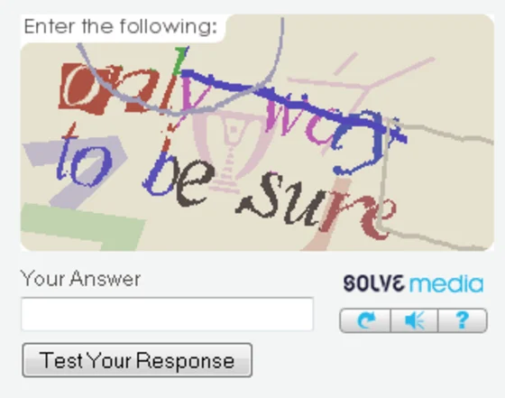

The Problem with Traditional CAPTCHAs
CAPTCHAs (Completely Automated Public Turing test to tell Computers and Humans Apart) are designed to distinguish humans from bots, but many systems rely on visual or audio tasks that can exclude users with disabilities. The impact is significant:
"People with disabilities will run into obvious problems with these tests. Those with sight loss or dyslexia won't be able to complete an image-based CAPTCHA and people with hearing loss won't be able to complete an audio CAPTCHA. Some users might be both deaf and blind, and so cannot pass either test."
- IA Labs Accessibility Report

Example of a traditional text CAPTCHA that can be challenging for users with visual impairments
Key Accessibility Challenges
Current CAPTCHA systems create barriers for various disability groups:
Visual CAPTCHAs
- Inaccessible to blind users
- Challenging for low vision users
- Problematic for color blindness
- Difficult with dyslexia
- Hard for cognitive disabilities
Audio CAPTCHAs
- Exclude deaf users
- Challenging for hard of hearing
- Problematic in noisy environments
- Difficult for non-native speakers
- Hard with auditory processing disorders
Interaction CAPTCHAs
- Exclude motor-impaired users
- Challenge those with tremors
- Problematic for limited dexterity
- Difficult with assistive tech
- Hard with repetitive stress injuries
Language Barriers
- English-centric designs
- Challenging for non-English speakers
- Problematic for low literacy
- Difficult with learning disabilities
- Hard for non-alphabetic language users
The Hidden Costs of CAPTCHAs
Beyond accessibility issues, current CAPTCHA systems raise significant privacy concerns:
"A 2023 study concluded CAPTCHAs are a tracking cookie farm for profit masquerading as a security service that made us spend 819 billion hours clicking on traffic lights to generate nearly
$1 trillion for Google."
- PC Gamer Report
Privacy Concerns
- Massive data collection
- Cross-site tracking
- Behavioral profiling
- Lack of transparency
- Limited user control
Economic Impact
- $888 billion value from tracking
- 819 billion human hours spent
- Lost productivity
- Barriers to online services
- Exclusion from digital economy
Looking Forward: Inclusive Alternatives
Our research has identified several promising alternatives that balance security with accessibility:
Behavior Analysis
- Mouse movement patterns
- Typing cadence analysis
- Scroll behavior
- Interaction timing
- Device fingerprinting
Cryptographic Puzzles
- Computational challenges
- Browser-based solutions
- No visual/audio components
- Works with assistive tech
- Privacy-preserving
"The most likely successor to CAPTCHAs will be background processes that gather user data such as mouse movements, clicks, scrolls, websites visited, actions taken, etc., and attempts to determine the likelihood that the user is a human."
- Prof. Urs Hengartner, University of Waterloo